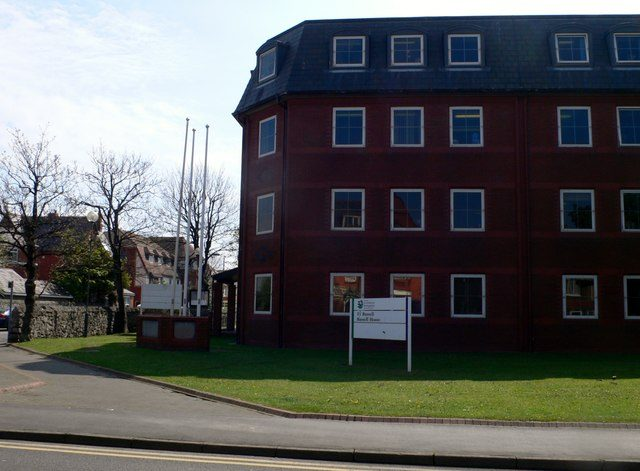

영국 웨일스 덴비셔 의회, 릴 청사 주차장에 태양광 카포트 허가…생산 전기는 청사·의회 시설이 직접 쓴다

주차면 85면 가운데 18면 위에 패널 지붕…계통 전기 구입 줄이고 운영비 절감, 허가 조건 4개 중 하나는 3개월 안 생물다양성 조경 계획 제출
영국 웨일스 덴비셔 의회(Denbighshire County Council)가 북부 해안 도시 릴(Rhyl) 처턴 로드의 의회 사무청사 러셀 하우스(Russell House) 전용 주차장에 태양광 카포트를 세우는 계획을 20일 허가했다. 카포트는 주차장 위에 태양광 패널 지붕을 얹어 차를 덮으면서 전기를 만드는 구조물로, 기존 주차면 85면 가운데 18면 위에 들어서며 주차면과 출입구는 그대로 두고 가운데 조명주 2개만 걷어낸 뒤 지붕 아래에 시간 맞춤 조명을 단다. 계획 신청은 의회가 직접 지정한 재생에너지 업체 에너지 게인 UK(Energy Gain UK)가 냈다. 업체 계획서는 여기서 만든 전기를 러셀 하우스와 주변 의회 건물·시설이 바로 써서 전력망에서 사 오는 전기를 줄이고, 운영비를 아끼며 의회 에너지 설비의 회복력을 높이고 의회 탄소 감축 목표에도 보탬이 된다고 설명했다. 의회는 허가에 조건 4개를 붙였고, 그 가운데 하나로 업체가 3개월 안에 지역 생물다양성을 순증시키는 조경 계획을 내도록 했다.
시민에너지 관점
주차면 85면 가운데 18면 위에 지붕만 얹어 공공청사 전기를 대는 방식은 새 땅을 한 평도 쓰지 않고, 만든 자리에서 바로 쓰니 전력망 부담도 줄인다. 주차장 태양광은 구조물 값이 더 든다는 우려가 나올 수 있지만, 청사가 아낀 전기요금은 고스란히 공공 재정으로 돌아오고 수십 년 동안 쌓인다. 다만 이 사업의 용량·비용·소유 구조는 알려지지 않았는데, 주민이 출자해 설비의 주인이 될 때 그 절감 이익이 업체가 아니라 지역에 머문다. 우리도 공영주차장과 공공청사 주차장부터 주민이 함께 소유하는 태양광 지붕을 올리는 일을 서둘러야 한다.
출처: Rhyl Journal 2026-10-22 Matthew Chandler 원문 보기
英ウェールズ・デンビーシャー議会、リル庁舎駐車場の太陽光カーポートを許可…発電した電気は庁舎・議会施設が直接使用
駐車区画85台分のうち18台分の上にパネル屋根…系統からの電力購入を減らし運営費を節減、許可条件4つのうち1つは3カ月以内の生物多様性向上の造園計画提出
英ウェールズのデンビーシャー議会（Denbighshire County Council）は20日、北部の海沿いの町リル（Rhyl）のチャートン・ロードにある議会庁舎ラッセル・ハウス（Russell House）の専用駐車場に太陽光カーポートを設ける計画を許可した。カーポートは駐車場の上に太陽光パネルの屋根を架けて車を覆いながら発電する構造物で、既存の駐車区画85台分のうち18台分の上に設けられ、駐車区画と出入口はそのままに中央の照明柱2本だけを撤去し、屋根の下にはタイマー式の照明を付ける。計画を申請したのは、議会自らが指定した再生可能エネルギー企業のエナジー・ゲインUK（Energy Gain UK）だ。同社の計画書は、ここで発電した電気をラッセル・ハウスと周辺の議会の建物・施設がそのまま使うことで送電網から買う電気を減らし、運営費を節約して議会のエネルギー設備の強靱性を高め、議会の炭素削減目標にも寄与すると説明している。議会は許可に4つの条件を付け、その一つとして同社に3カ月以内に地域の生物多様性を純増させる造園計画を提出するよう求めた。
市民エネルギーの視点
駐車区画85台分のうち18台分の上に屋根を架けるだけで公共庁舎に電気を供給するやり方は、新たな土地を少しも使わず、つくった場所ですぐ使うので送電網の負担も減らす。駐車場の太陽光は構造物の費用がかさむとの懸念も出るだろうが、庁舎が節約した電気代はそのまま公共財政に戻り、数十年にわたって積み上がる。ただ、この事業の容量・費用・所有の形は明らかになっておらず、住民が出資して設備の持ち主になってこそ、その節約分が企業ではなく地域にとどまる。韓国でも公営駐車場や公共庁舎の駐車場から、住民が共に所有する太陽光屋根を載せる取り組みを急ぐべきだ。
出典: Rhyl Journal 2026-10-22 Matthew Chandler 原文を読む
英国威尔士登比郡议会批准在里尔办公楼停车场建光伏车棚…所发电力由办公楼和议会设施直接使用
在85个车位中的18个上方架设光伏顶棚…减少从电网购电、节省运营费用，4项批准条件之一是3个月内提交提升生物多样性的绿化方案
英国威尔士登比郡议会（Denbighshire County Council）20日批准了在北部海滨城镇里尔（Rhyl）彻顿路议会办公楼拉塞尔大楼（Russell House）专用停车场建设光伏车棚的计划。光伏车棚是在停车场上方架设光伏板顶棚、既为车辆遮挡又能发电的构筑物，将建在现有85个车位中的18个车位上方；车位和出入口保持不变，只拆除中间的2根照明灯杆，并在顶棚下安装定时照明。提出规划申请的是议会自行指定的可再生能源企业Energy Gain UK。该公司的规划说明称，这里发的电将由拉塞尔大楼及附近议会建筑和设施直接使用，从而减少从电网购电、节省运营费用、提高议会能源设施的韧性，并有助于实现议会的减碳目标。议会为这项批准附加了4项条件，其中之一是要求该公司在3个月内提交能让当地生物多样性实现净增长的绿化方案。
市民能源视角
只在85个车位中的18个上方加盖顶棚就能为公共办公楼供电，这种方式不占用一寸新土地，就地发电就地使用，也减轻了电网负担。有人可能担心停车场光伏的构筑物成本较高，但办公楼省下的电费会原封不动地回到公共财政，并在几十年里不断累积。不过，这个项目的装机容量、成本和所有权结构都没有公开；只有居民出资成为设备的主人，节省下来的收益才会留在当地而不是流向企业。韩国也应从公营停车场和公共机关停车场做起，尽快推动居民共同拥有的光伏顶棚。
来源: Rhyl Journal 2026-10-22 Matthew Chandler 查看原文
Denbighshire council approves solar carport at its Rhyl office car park, with the power used directly by council buildings
Panel roof to cover 18 of 85 parking spaces, cutting grid imports and running costs; one of four planning conditions requires a biodiversity landscaping scheme within three months
Denbighshire County Council in north Wales on the 20th approved plans for a solar carport over the dedicated car park of Russell House, its office building on Churton Road in the seaside town of Rhyl. The carport, a roof of photovoltaic panels that shelters vehicles while generating power, will sit above 18 of the car park's 85 existing spaces; the parking layout and access stay as they are, two central lighting poles will be removed, and timer-controlled lighting will be fitted under the canopy. The application came from Energy Gain UK, a renewable energy company the council itself appointed. The company's planning statement says the electricity will be used directly by Russell House and nearby council buildings and facilities, reducing power bought from the grid, lowering running costs, making the council's energy infrastructure more resilient and supporting its carbon reduction goals. The council attached four conditions to the consent, one of which requires the company to submit, within three months, a landscaping scheme that delivers a net gain in local biodiversity.
Citizen Energy View
Putting a roof over just 18 of 85 parking spaces to supply a public office building uses no new land at all, and because the power is consumed where it is made, it also eases the load on the grid. Some may object that car park solar costs more because of the structure, but every pound of electricity the building saves goes straight back to the public purse and keeps adding up for decades. The project's capacity, cost and ownership have not been disclosed, however, and only when residents invest and become owners of the equipment will those savings stay in the community rather than with a contractor. Korea should move quickly to put community-owned solar roofs over public car parks and the car parks of public buildings first.
Source: Rhyl Journal 2026-10-22 Matthew Chandler Read the original